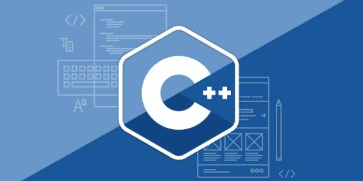
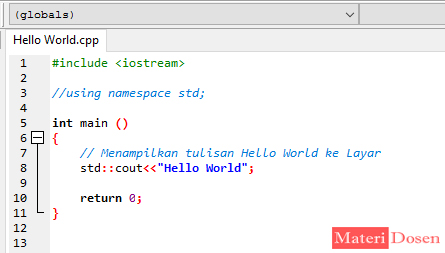

Bahasa Pemrograman C++
Dibuat oleh Ardi Nur Arief
C++ adalah bahasa pemrograman yang dikembangkan sebagai perpanjangan dari bahasa C. Dikembangkan oleh Bjarne Stroustrup pada awal 1980-an, C++ menawarkan fitur pemrograman berorientasi objek, yang tidak ada di C, sehingga sangat populer untuk pengembangan perangkat lunak skala besar, game, aplikasi desktop, hingga sistem operasi.
Beberapa Konsep Inti dalam C++
1. Pemrograman Berorientasi Objek (OOP): Mendukung konsep seperti class, object, inheritance, polymorphism, dan encapsulation, memungkinkan kode lebih terstruktur dan modular.
2. Tipe Data dan Variabel: Seperti C, C++ memiliki tipe data dasar seperti int, float, double, char, serta tipe data pengguna (user-defined types) seperti struct dan class.
3. Fungsi dan Prosedur: C++ mendukung pembuatan fungsi-fungsi untuk memecah program besar menjadi bagian-bagian yang lebih kecil, termasuk function overloading.
4. Pengelolaan Memori: Menggunakan pointer dan reference untuk mengelola memori secara efisien. Selain itu, mendukung dynamic memory allocation menggunakan new dan delete.
5. Library Standard Template (STL): Menyediakan struktur data dan algoritma yang siap digunakan, seperti vector, list, queue, map, dan lain-lain, untuk membantu pengembang dalam mengelola data.
6. Kecepatan dan Efisiensi: Karena mendekati bahasa mesin, C++ sangat cepat dan efisien, sehingga sering digunakan dalam pengembangan perangkat lunak yang memerlukan performa tinggi.
Contoh Bahasa Pemrograman C++

#include
Struktur Program C++
Header Files
Mengimpor pustaka atau file pendukung, misalnya #include
Namespace using namespace std; untuk menghindari konflik nama dalam kode.
Fungsi Main Fungsi utama yang akan dieksekusi saat program berjalan.
Tipe Data dan Variabel
Int adalah angka bulat.
Float dan Doble adalah angka desimal.
Char adalah karakter tunggal.
Bool adalah tipe data boolean true atau false.
Percabangan (Control Flow)
Percabangan digunakan untuk membuat keputusan berdasarkan kondisi.
If else untuk melakukan percabangan sederhana.
Switch-case untuk percabangan dengan banyak pilihan.
Perulangan (Loop)
Foor-loop perulangan dengan batas yang sudah jelas.
While-loop Perulangan yang bergantung pada kondisi.
Do-while loop Mirip dengan while, tetapi dieksekusi setidaknya sekali.
Fungsi
Fungsi memungkinkan pemrogram untuk memecah kode menjadi bagian-bagian yang lebih kecil.
Pointer dan refrensi
Pointer adalah variabel yang menyimpan alamat memori dari variabel lain.
- Operator Address-of (&) digunakan untuk mendapatkan alamat variabel.
- Operator Dereference (*) digunakan untuk mengakses nilai di alamat tersebut.